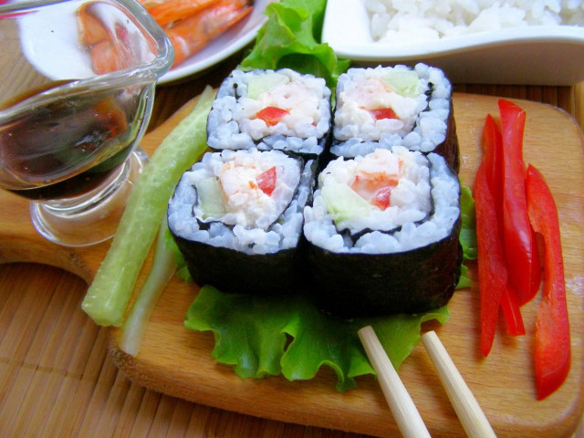

ООО "Русский дар" 
Вернутся в начальный раздел | Вернутся на главную страницу
Оборудование: нож, миска, холодильник и ложка столовая.

Как сделать роллы с креветками домашние? Начните с риса. Переберите его.

Потом промойте, причем так, чтобы вода после промывки была прозрачной.

Залейте рис водой (чтобы она покрыла его сверху на 1.5-2 пальца). Как только вода закипит, уменьшите огонь и варите по инструкции. У меня ушло 12 мин. В конце я накрыла кастрюльку крышкой, выключила огонь и подождала 10 мин.

Если у вас свежие креветки, отварите их. У меня были мороженые королевские. Я их разморозила в воде, чтобы потом легко было чистить. Не передержите в воде!

Затем, сняв панцирь, я убрала кишечник (тонкий надрез надо сделать на спинке креветки и вытащить тонкую нить) и нанизала на шпажки. Так креветка будет ровнее, когда мы будем ее заливать кипятком и потом класть на рис.

Чтобы у креветок был пикантнее вкус, я залила их кипящим раствором сока лимона, соли и воды (все по вкусу). Пусть постоят несколько минут. Потом слейте эту смесь и положите креветочки в мисочку, не убирая шпажки.

Очень оперативно приготовьте заправку из чайной ложки кипятка, такого же количества сахара и рисового уксуса. Можете попробовать на вкус и изменить соотношение компонентов. Я, например, чуть больше воды налила.

Нарежьте огурчик, очистив от кожицы. Пускай вот такие полоски будут.

Нарежьте болгарский перец – для красоты и вкуса.

Вот и все. Влейте заправку в еще горячий рис. Размешайте. Дайте ему остыть.

Накройте циновку пленкой, выложите на нее нори. Смачивая руки в воде (поставьте себе чашку с водой рядом), выложите тонкий слой риса. Только обязательно оставьте пустую полоску нори с дальней от вас стороны (1.5-2 см).

Положите на рис креветки, огурец и перец по всей ширине нори.

Сверху смажьте начинку для ролла майонезом.

Нам осталось свернуть ролл. Но и сейчас резать его нельзя. Пусть полежит, утрамбуется.

Минут через 10 такого нарежьте ролл острым ножом. И подавайте.

Шаг 1, Шаг 2, Шаг 3, Шаг 4, Шаг 5, Шаг 6, Шаг 7, Шаг 8, Шаг 9, Шаг 10, Шаг 11, Шаг 12,Шаг 13, Шаг 14, Шаг 15.